Lecture 9 General random variables
Learning objectives
- Define a continuous random variable
- Identify continuous random variable distributions relevant to social science
- Define expected value and variance of continuous random variables
- Relate continuous random variables to discrete random variables
- Define cumulative distribution functions (CDFs) for continuous random variables and compare to discrete random variables
- Estimate probability of events using probability density functions (PDFs) and cumulative distribution functions (CDFs)
Supplemental readings
- Chapter 3.1-.3 Bertsekas and Tsitsiklis (2008)
- Equivalent reading from Bertsekas and Tsitsiklis lecture notes
9.1 Continuous random variables
Continuous random variables are random variables that are not discrete. Examples include:
- Approval ratings
- GDP
- Wait time between wars: \(X(t) = t\) for all \(t\)
- Proportion of vote received: \(X(v) = v\) for all \(v\)
Continuous random variables have many analogues to discrete probability distributions, but instead we need calculus to answer questions about probability.
9.2 Probability density function
What is the area under the curve under \(f(x)\) between \(.5\) and \(2\)?
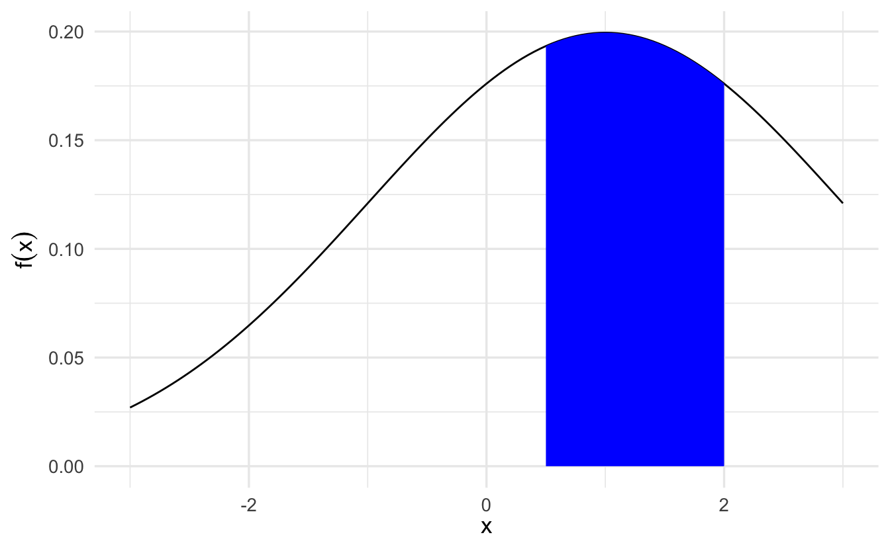
\[\int_{1/2}^{2} f(x)\,dx = F(2) - F(1/2)\]
9.2.1 Definition
::: {.definition echo=TRUE name=“Probability density function”} \(X\) is a continuous random variable if there exists a nonnegative function defined for all \(x \in \Re\) having the property for any (measurable) set of real numbers \(B\),
\[\Pr(X \in B) = \int_{B} f_X(x)\,dx\]
- Non-negative meaning \(f(x)\) is never negative
- \(\Pr(X \in B)\): probability that \(X\) is is an element of \(B\)
We’ll call \(f(\cdot)\) the probability density function (PDF) for \(X\)
:::
The probability that the value of \(X\) falls within an interval is
\[\Pr (a \leq X \leq b) = \int_a^b f_X(x) \,dx\]
and can be interpreted as the area under the graph of the PDF. For any single value \(a\), we have \(\Pr (X = a) = \int_a^a f_X(x) \,dx = 0\). Note that to qualify as a PDF, a function \(f_X\) must be nonnegative, i.e. \(f_X(x) \geq 0\) for every \(x\), and must also have the normalization property
\[\int_{-\infty}^{\infty} f_X(x) \,dx = \Pr (-\infty \leq X \leq \infty) = 1\]
9.2.2 Example: Uniform Random Variable
\[X \sim \text{Uniform}(0,1)\]
\[ f_X(x) = \left\{ \begin{array}{ll} c & \quad \text{if } 0 \leq x \leq 1 \\ 0 & \quad \text{otherwise} \end{array} \right. \]
for some constant \(c\). The constant can be determined from the normalization property
\[1 = \int_{-\infty}^{\infty} f_X(x)\,dx = \int_0^1 c \,dx = c \int_0^1 \,dx = c\]
so that \(c=1\).
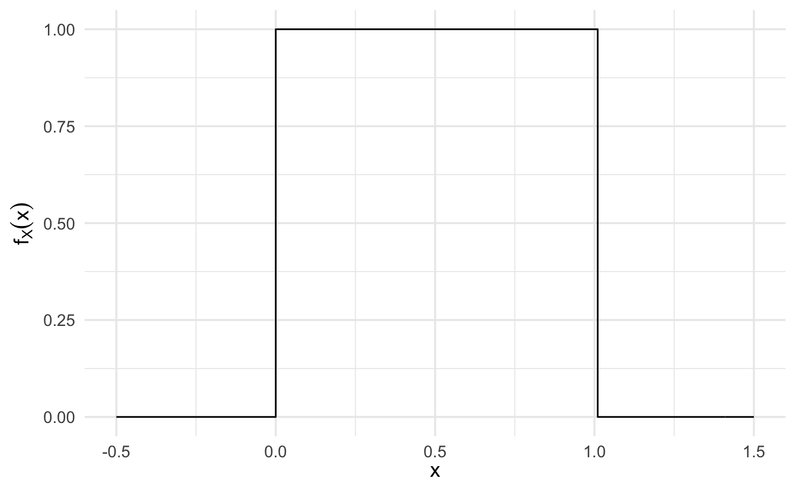
Example 9.1 \[ \begin{aligned} \Pr(X \in [0.2, 0.5]) & = \int_{0.2}^{0.5} 1 \,dx \\ & = X |^{0.5}_{0.2} \\ & = 0.5 - 0.2 \\ & = 0.3 \end{aligned} \]
Example 9.2 \[ \begin{aligned} \Pr(X \in [0, 1] ) & = \int_{0}^{1} 1 \,dx \\ & = X |^{1}_{0} \\ & = 1 - 0 \\ & = 1 \end{aligned} \]
Example 9.3 \[ \begin{aligned} \Pr(X \in [0.5, 0.5]) & = \int_{0.5}^{0.5} 1\,dx \\ & = X|^{0.5}_{0.5} \\ & = 0.5 - 0.5 \\ & = 0 \end{aligned} \]
Example 9.4 \[ \begin{aligned} \Pr(X \in \{[0, 0.2]\cup[0.5, 1]\}) & = \int_{0}^{0.2} 1\,dx + \int_{0.5}^{1} 1\,dx \\ & = X_{0}^{0.2} + X_{0.5}^{1} \\ & = 0.2 - 0 + 1 - 0.5 \\ & = 0.7 \end{aligned} \]
More generally, the PDF of a uniform random variable has the form
\[ f_X(x) = \left\{ \begin{array}{ll} \frac{1}{b-a} & \quad \text{if } a \leq x \leq b \\ 0 & \quad \text{otherwise} \end{array} \right. \]
To summarize
- \(\Pr(X = a) = 0\)
- \(\Pr(X \in (-\infty, \infty) ) = 1\)
- If \(F\) is antiderivative of \(f\), then \(\Pr(X \in [c,d]) = F(d) - F(c)\)19
9.2.3 Expectation
The expected value of a continuous random variable \(X\) is defined as
\[\E[X] = \int_{-\infty}^{\infty} x f_X(x) \,dx\]
This is similar to the discrete case except instead of a summation operation, we use integration to calculate the expected value. If \(X\) is a continuous random variable with a given PDF, any real-valued function \(Y = g(X)\) is also a random variable. The mean of \(g(X)\) satisfies the expected value rule:
\[\E[g(X)] = \int_{-\infty}^{\infty} g(x) f_X(x) \,dx\]
- The \(n\)th moment is defined as \(\E[X^n]\), the expected value of the random variable \(X^n\)
- The variance, denoted by \(\Var(X)\) is defined as the expected value of the random variable \((X - \E[X])^2 = \E[X^2] - (\E[X])^2\)
Example 9.5 (Uniform random variable) Consider a uniform PDF over an interval \([a,b]\):
\[ \begin{align} \E[X] = \int_{-\infty}^{\infty} x f_X(x) \,dx &= \int_a^b x \times \frac{1}{b-a} \,dx \\ &= \frac{1}{b-a} \times \frac{1}{2}x^2 \Big|_a^b \\ &= \frac{1}{b-a} \times \frac{b^2 - a^2}{2} \\ &= \frac{a+b}{2} \end{align} \]
To obtain the variance, we first calculate the second moment. We have
\[ \begin{align} \E[X^2] = \int_a^b x^2 \times \frac{1}{b-a} \,dx &= \frac{1}{b-a} \int_a^b x^2 \,dx \\ &= \frac{1}{b-a} \times \frac{1}{3}x^3 \Big|_a^b \\ &= \frac{b^3 - a^3}{3(b-a)} \\ &= \frac{a^2 + ab + b^2}{3} \end{align} \]
Thus, the variance is
\[ \begin{align} \Var(X) = \E[X^2] - (\E[X])^2 = \frac{a^2 + ab + b^2}{3} - \left( \frac{a+b}{2} \right)^2 = \frac{(b-a)^2}{12} \end{align} \]
9.2.4 Exponential random variable
An exponential random variable has a PDF of the form
\[ f_X(x) = \left\{ \begin{array}{ll} \lambda e^{-\lambda x} & \quad \text{if } x \geq 0 \\ 0 & \quad \text{otherwise} \end{array} \right. \]
where \(\lambda\) is a positive parameter characterizing the PDF.
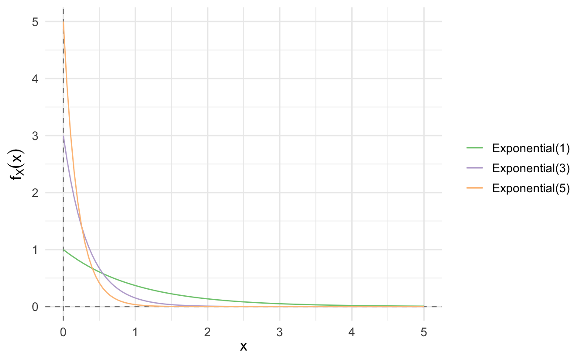
\[\E[X] = \frac{1}{\lambda}, \quad \Var(X) = \frac{1}{\lambda^2}\]
It is frequently used to model phenomena of a continuous nature such as the time between arrivals (e.g. time between customers arriving at a restaraunt) and the distance between occurrences (e.g. distance between defects in a plate glass window). It is closely associated with the Poisson discrete random variable, which we will return to later.
9.3 Cumulative distribution function
The probability density function (\(f\)) characterizes distribution of continuous random variable. Equivalently, the cumulative distribution function characterizes continuous random variables. For a continuous random variable \(X\) define its cumulative distribution function (CDF) \(F_X(x)\) as,
\[F_X(x) = \Pr(X \leq x) = \int_{-\infty} ^{x} f_X(t) \,dt\]
Example 9.6 (Uniform distribution) Suppose \(X \sim \text{Uniform}(0,1)\), then
\[ \begin{aligned} F_X(x) & = \Pr(X\leq x) \\ & = 0 \text{, if }x< 0 \\ & = 1 \text{, if }x >1 \\ & = x \text{, if } x \in [0,1] \end{aligned} \]
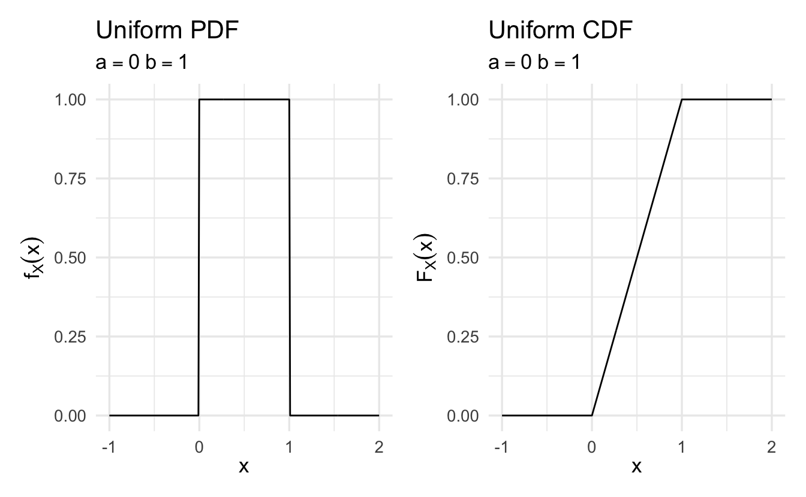
9.3.1 Properties of CDFs
\(F_X\) is monotonically nodecreasing – if \(x \leq y\), then \(F_X(x) \leq F_X(y)\)
\(F_X(x)\) tends to \(0\) as \(x \rightarrow -\infty\), and to \(1\) as \(x \rightarrow \infty\)
\(F_X(x)\) is a continuous function of \(x\)
If \(X\) is continuous, the PDF and CDF can be obtained from each other by integration or differentiation
\[F_X(x) = \int_{-\infty}^x f_X(t) \,dt, \quad f_X(x) = \frac{dF_X}{dx} (x)\]
9.4 Normal distribution
Suppose \(X\) is a random variable with \(X \in \Re\) and density
\[f(x) = \frac{1}{\sqrt{2\pi \sigma^2}}\exp\left(-\frac{(x - \mu)^2}{2\sigma^2}\right)\]
where \(\mu\) and \(\sigma\) are two scalar parameters characterizing the PDF, with \(\sigma\) assumed positive. Then \(X\) is a normally distributed random variable with parameters \(\mu\) and \(\sigma^2\).
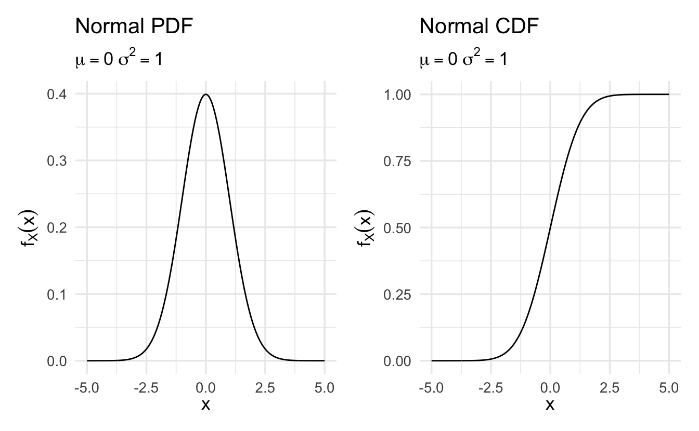
Equivalently, we’ll write
\[X \sim \text{Normal}(\mu, \sigma^2)\]
9.4.1 Expected value/variance of normal distribution
\(Z\) is a standard normal distribution if
\[Z \sim \text{Normal}(0,1)\]
We’ll call the cumulative distribution function of \(Z\),
\[F_{Z}(x) = \frac{1}{\sqrt{2\pi} }\int_{-\infty}^{x} \exp(-z^2/2) \,dz\]
Suppose \(Z \sim \text{Normal}(0,1)\)
\[ \begin{aligned} Y &= 2Z + 6 \\ Y &\sim \text{Normal}(6, 4) \end{aligned} \]
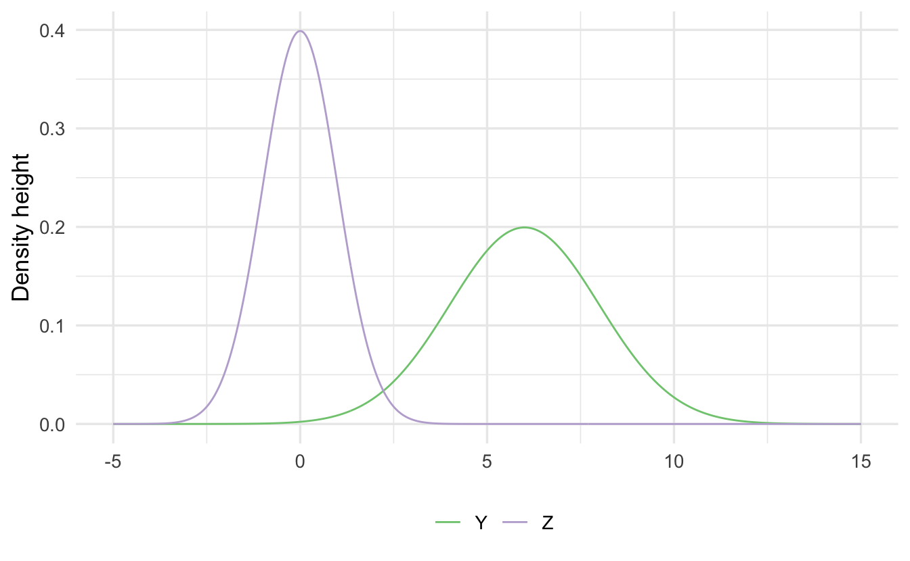
Scale/Location: If \(Z \sim N(0,1)\), then \(X = aZ + b\) is,
\[X \sim \text{Normal} (b, a^2)\]
Assume we know:
\[ \begin{aligned} \E[Z] & = 0 \\ \Var(Z) & = 1 \end{aligned} \]
This implies that, for \(Y \sim \text{Normal}(\mu, \sigma^2)\)
\[ \begin{aligned} \E[Y] & = \E[\sigma Z + \mu] \\ & = \sigma \E[Z] + \mu \\ & = \mu \\ \Var(Y) & = \Var(\sigma Z + \mu) \\ & = \sigma^2 \Var(Z) + \Var(\mu) \\ & = \sigma^2 + 0 \\ & = \sigma^2 \end{aligned} \]
This illustrates a key property of normal random variables. If \(X\) is a normal random variable with mean \(\mu\) and variance \(\sigma^2\), and if \(a \neq 0, b\) are scalars, then the random variable
\[Y = aX + b\]
is also normal, with mean and variance
\[\E[Y] = a\mu + b, \quad \Var(Y) = a^2 \sigma^2\]
9.4.2 Why rely on the standard normal distribution
The normal distribution is commonly used in statistical analysis. Many random variables can be approximated with the normal distribution. Standardizing this makes it easier to make comparisons across variables with different ranges/variances
Example 9.7 (GRE scores) Consider GRE scores. The verbal and quantitative scores have different variability, so one cannot easily determine if a 159 on the verbal is better or worse than a 159 on the quantitative section. The standard normal distribution is unitless, so any random variable can be compared with another random variable.
This also saves time on the calculus as we don’t need to recalculate the integral when calculating cumulative probability based on the unique \(\mu\) and \(\sigma^2\). Instead, do this once and store the info in a lookup table. This made calculating probabilities (relatively) easy before computers.
::: {.example name=“Support for President Trump”}
Suppose we are interested in modeling presidential approval. Let \(Y\) represent the random variable “proportion of population who approves the job the president is doing”. Individual responses (that constitute proportion) are independent and identically distributed (sufficient, but not necessary) and we take the average of those individual responses. If we observe many responses (\(N\rightarrow \infty\)), then by the Central Limit Theorem20 \(Y\) is Normally distributed, or
\[ \begin{aligned} Y & \sim \text{Normal}(\mu, \sigma^2) \\ f_Y(y) & = \frac{1}{\sqrt{2\pi \sigma^2}} \exp\left(-\frac{(y-\mu)^2}{2\sigma^2} \right) \end{aligned} \]
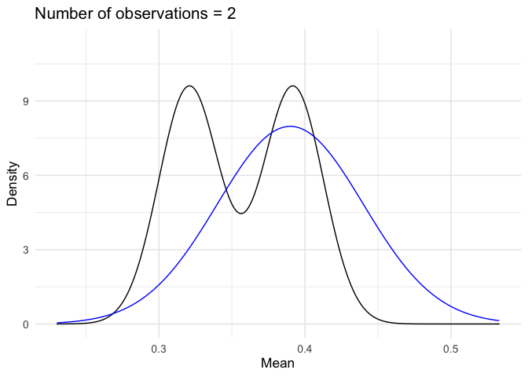
Suppose \(\mu = 0.39\) and \(\sigma^2 = 0.0025\). What is the probability it isn’t that bad? That is, \(\Pr(Y\geq 0.45)\)?
\[ \begin{aligned} \Pr(Y \geq 0.45) & = 1 - \Pr(Y \leq 0.45 ) \\ & = 1 - \Pr(0.05 Z + 0.39 \leq 0.45) \\ & = 1 - \Pr(Z \leq \frac{0.45-0.39 }{0.05} ) \\ & = 1 - \frac{1}{\sqrt{2\pi} } \int_{-\infty}^{6/5} \exp(-z^2/2) \,dz \\ & = 1 - F_{Z} (\frac{6}{5} ) \\ & = 0.1150697 \end{aligned} \]
9.5 Gamma distribution
Definition 9.1 (Gamma function) Suppose \(\alpha>0\). Then define \(\Gamma(\alpha)\) as
\[ \begin{aligned} \Gamma(\alpha) &= \int_{0}^{\infty} y^{\alpha- 1} e^{-y} \,dy \\ &= (\alpha- 1)! \, \forall \alpha \in \{1, 2, 3, \ldots\} \end{aligned} \]
Suppose we have \(\Gamma(\alpha)\),
\[ \begin{aligned} \frac{\Gamma(\alpha)}{\Gamma(\alpha)} & = \frac{\int_{0}^{\infty} y^{\alpha-1} e^{-y} dy}{\Gamma(\alpha)} \\ 1 & = \int_{0}^{\infty} \frac{1}{\Gamma(\alpha)} y^{\alpha-1} e^{-y} \,dy \end{aligned} \]
Because \(\frac{\Gamma(\alpha)}{\Gamma(\alpha)}\) integrates to 1 over its full domain (i.e. non-negative real numbers), it is also a PDF.
Set \(X = Y/\beta\)
\[ \begin{aligned} F(x) = \Pr(X \leq x) & = \Pr(Y/\beta \leq x ) \\ & = \Pr(Y \leq x \beta ) \\ & = F_{Y} (x \beta) \\ \frac{\partial F_{Y} (x \beta) }{\partial x} & = f_{Y} (x \beta) \beta \end{aligned} \]
The result is:
\[f(x|\alpha, \beta) = \frac{\beta^{\alpha}}{\Gamma(\alpha)} x^{\alpha - 1} e^{-x\beta}\]
Definition 9.2 (Gamma distribution) Suppose \(X\) is a continuous random variable, with \(X \geq 0\). Then if the pdf of \(X\) is
\[f(x|\alpha, \beta) = \frac{\beta^{\alpha}}{\Gamma(\alpha)} x^{\alpha - 1} e^{-x\beta}\]
if \(x\geq 0\) and \(0\) otherwise, we will say \(X\) is a Gamma distribution.
\[X \sim \text{Gamma}(\alpha, \beta)\]
Suppose \(X \sim \text{Gamma}(\alpha, \beta)\)
\[ \begin{aligned} \E[X] & = \frac{\alpha}{\beta} \\ \Var(X) & = \frac{\alpha}{\beta^2} \end{aligned} \]
Suppose \(\alpha = 1\) and \(\beta = \lambda\). If
\[ \begin{aligned} X & \sim \text{Gamma}(1, \lambda) \\ f(x|1, \lambda ) & = \lambda e^{- x \lambda} \end{aligned} \]
We will say
\[X \sim \text{Exponential}(\lambda)\]
9.5.1 Properties of Gamma distributions
Proposition 9.1 Suppose we have a sequence of independent random variables, with
\[X_{i} \sim \text{Gamma}(\alpha_{i}, \beta)\]
Then
\[Y = \sum_{i=1}^{N} X_{i}\]
\[Y \sim \text{Gamma}(\sum_{i=1}^{N} \alpha_{i} , \beta)\]
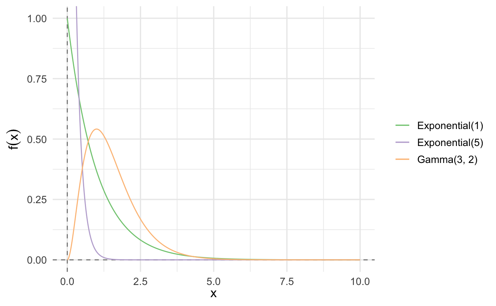
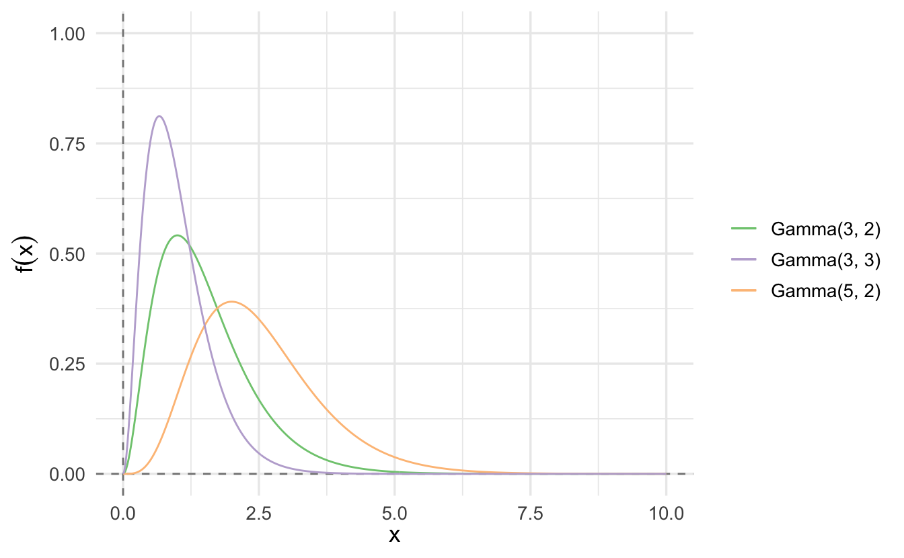
9.5.2 Importance of the Gamma distribution
The exponential and \(\chi^2\) distributions are special cases of the Gamma distribution. The Gamma distribution is also commonly used in Bayesian statistics as it is the conjugate prior for various types of inverse scale (rate) parameters.
- \(\lambda\) for exponential or Poisson distributions
- \(\beta\) for the Gamma distribution itself
9.6 \(\chi^2\) distribution
Suppose \(Z \sim \text{Normal}(0,1)\). Consider \(X = Z^2\)
\[ \begin{aligned} F_{X}(x) & = \Pr(X \leq x) \\ & = \Pr(Z^2 \leq x ) \\ & = \Pr(-\sqrt{x} \leq Z \leq \sqrt{x}) \\ & = \frac{1}{\sqrt{2\pi}} \int_{-\sqrt{x}}^{\sqrt{x} } e^{-\frac{z^2}{2}} \,dz\\ & = F_{Z} (\sqrt{x}) - F_{Z} (-\sqrt{x}) \end{aligned} \]
The PDF then is
\[ \begin{aligned} \frac{\partial F_{X}(x) }{\partial x } & = f_{Z} (\sqrt{x}) \frac{1}{2\sqrt{x}} + f_{Z}(-\sqrt{x}) \frac{1}{2\sqrt{x}} \\ & = \frac{1}{\sqrt{x}}\frac{1}{2 \sqrt{2\pi}} ( 2e^{-\frac{x}{2}}) \\ & = \frac{1}{\sqrt{x}}\frac{1}{\sqrt{2\pi}} ( e^{-\frac{x}{2}}) \\ & = \frac{(\frac{1}{2})^{1/2}}{\Gamma(\frac{1}{2})}\left(x^{1/2 - 1} e^{-\frac{x}{2}}\right) \end{aligned} \]
- \(X \sim \text{Gamma}(1/2, 1/2)\)
- Then if \(X = \sum_{i=1}^{N} Z^2\), \(X \sim \text{Gamma}(n/2, 1/2)\)
Definition 9.3 (Chi-Squared distribution) Suppose \(X\) is a continuous random variable with \(X\geq 0\), with PDF
\[f(x) = \frac{1}{2^{n/2} \Gamma(n/2) } x^{n/2 - 1} e^{-x/2}\]
Then we will say \(X\) is a \(\chi^2\) distribution with \(n\) degrees of freedom. Equivalently,
\[X \sim \chi^{2}(n)\]
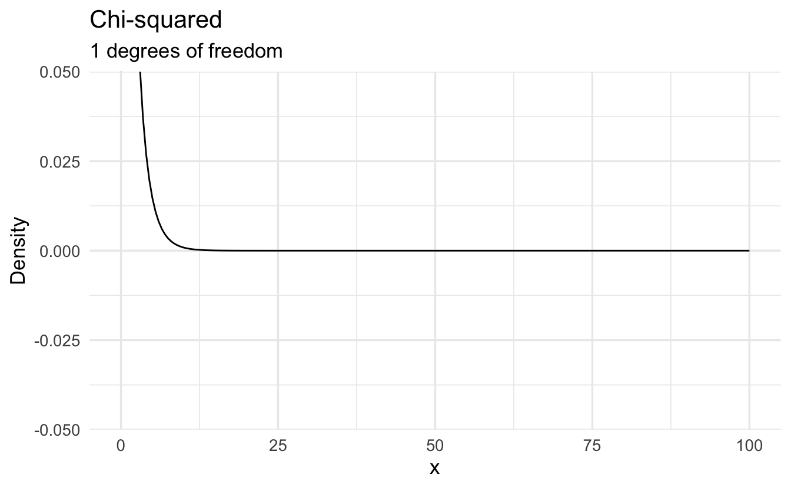
9.6.1 \(\chi^2\) properties
Suppose \(X \sim \chi^2(n)\)
\[ \begin{aligned} \E[X] & = \E\left[\sum_{i=1}^{N} Z_{i}^2\right] \\ & = \sum_{i=1}^{N} \E[Z_{i}^{2} ] \\ \Var(Z_{i} ) & = \E[Z_{i}^2] - \E[Z_{i}]^2\\ 1 & = \E[Z_{i}^2]- 0 \\ \E[X] & = n \end{aligned} \]
\[ \begin{aligned} \Var(X) & = \sum_{i=1}^{N} \Var(Z_{i}^2) \\ & = \sum_{i=1}^{N} \left(\E[Z_{i}^{4} ] - \E[Z_{i}]^{2} \right) \\ & = \sum_{i=1}^{N} \left(3 - 1\right ) = 2n \end{aligned} \]
We will use the \(\chi^2\) across statistics.
9.7 Student’s \(t\) distribution
Definition 9.4 (Student's t-distribution) Suppose \(Z \sim \text{Normal}(0, 1)\) and \(U \sim \chi^2(n)\). Define the random variable \(Y\) as,
\[Y = \frac{Z}{\sqrt{\frac{U}{n}}}\]
If \(Z\) and \(U\) are independent then \(Y \sim t(n)\), with PDF
\[t(n) = \frac{\Gamma(\frac{n+1}{2})}{\sqrt{\pi n } \Gamma(\frac{n}{2})}\left(1 + \frac{x^2}{n}\right)^{-\frac{n+1}{2}}\]
We will use the t-distribution extensively for test statistics.
- \(n\) is the number of degrees of freedom
- \(\Gamma\) is the Gamma function \(\Gamma(n) = (n-1)!\)
9.7.1 History of Student’s \(t\)
](https://upload.wikimedia.org/wikipedia/commons/4/42/William_Sealy_Gosset.jpg)
Figure 9.1: William Sealy Gosset, creator of the Student’s \(t\) distribution. Source: Wikipedia
{kind=link}
](https://upload.wikimedia.org/wikipedia/commons/3/35/Guinness_Glass_2010.jpg)
Figure 9.2: A pint of Guinness. Not really my preferred type of beer, but a favorite of my brother-in-law. Source: Wikipedia
{kind=link}
William Sealy Gosset was a researcher who worked for the Guinness brewery. Gosset was part of a revolution applying statistics to beermaking.
- How do the chemical properties of barley effect beer taste?
- What fertilizer produces the best crop yield?
Gosset’s problem was that his experiments typically had an \(N\) as low as 3. The properties of the normal distribution break down at these low sample sizes - how could Gosset determine if the estimated mean was statistically distinguishable from zero?
In order to solve the problem, Gosset applied a new distribution which accounts for sample size. Because he worked for Guinness, Gosset could not publish this distribution under his real name. The resulting paper was published under the pseudonym “Student”, and it became known as Student’s \(t\)-distribution
9.7.2 Differences from the Normal Distribution
The normal distribution always has the same shape. The \(Z\)-scores of \(-1.96\) and \(+1.96\) always mark the boundaries of the 95% confidence interval.
However the shape of the student’s \(t\)-distribution changes depending on the sample size. When sample sizes are low, the student’s \(t\)-distribution expands the boundaries on random sampling error, creating a larger confidence interval. This avoids being overconfident in our sample statistic. As sample size increases, the confidence bounds shrink. As sample size approaches infinite size, student’s \(t\)-distribution takes on the same shape as the normal distribution.
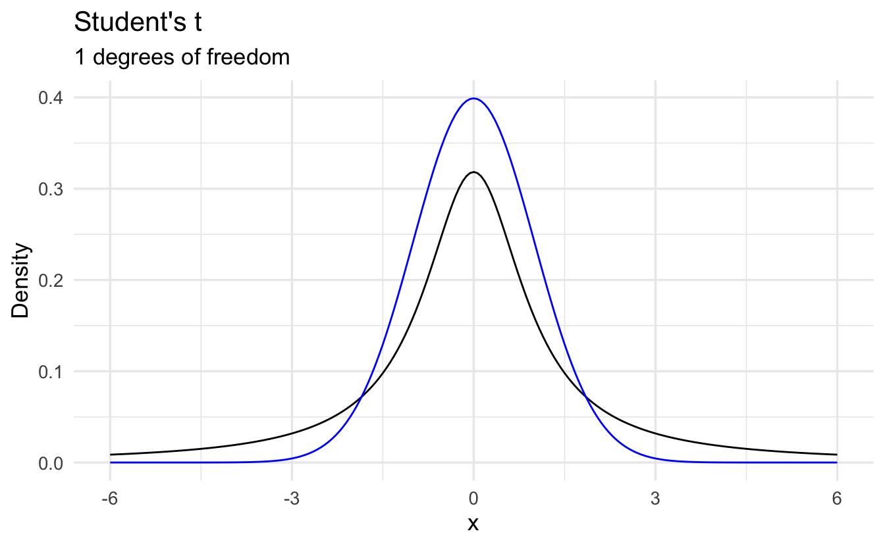
References
More to come on this.↩︎